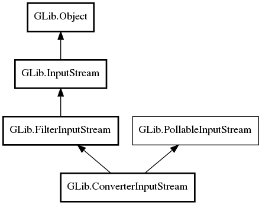

GLib.ConverterInputStream Reference Manual
Packages
gio-2.0
GLib
ConverterInputStream
converter
ConverterInputStream
get_converter
ConverterInputStream
Object Hierarchy:

Description:
public
class
ConverterInputStream
:
FilterInputStream
,
PollableInputStream
Namespace:
GLib
Package:
gio-2.0
Content:
Properties:
public
Converter
converter
{
construct
set
;
get
; }
Creation methods:
public
ConverterInputStream
(
InputStream
base_stream,
Converter
converter)
Methods:
public
weak
Converter
get_converter
()